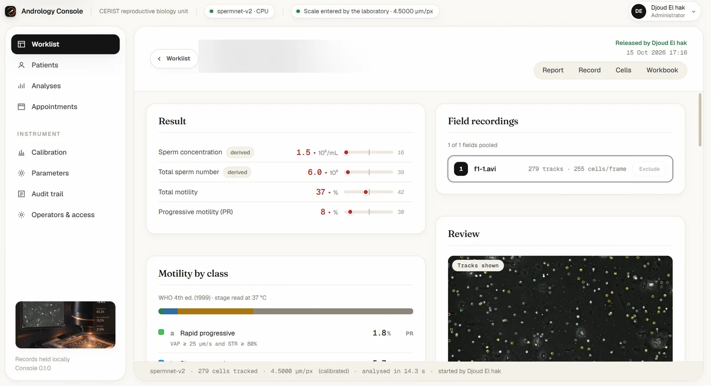

2.1
SpermNet and the Andrology Console
Automated sperm motility analysis that runs on a laboratory PC without a GPU. I replaced a YOLO11m and DeepSORT baseline with a 0.38 M-parameter detector and a motion-only tracker, measured the calibration instead of assuming it, and shipped the engine in an offline desktop application.
0.769 detection F1 vs 0.690 195 s → 10.4 s per clip on 2 CPU cores −1.6 vs −11.1 pts bias
